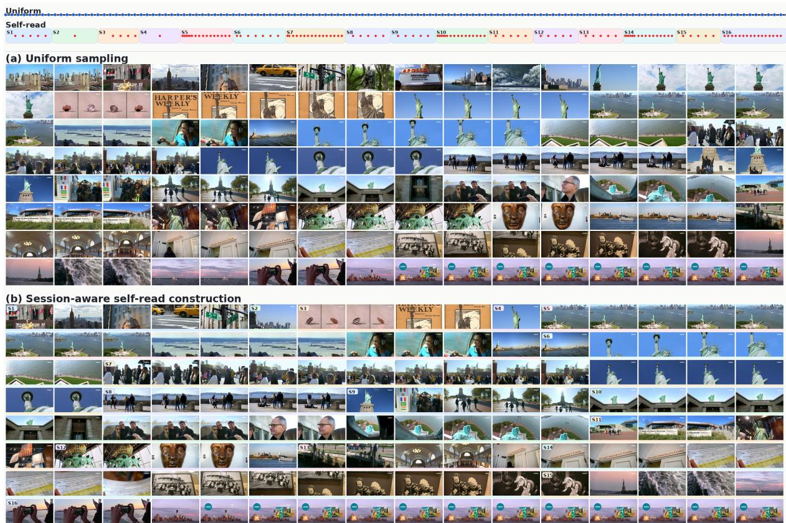

Figureure 2 · : Overview of the MEMORYCARD frameworkFigure 2: Overview of the MEMORYCARD framework. MEMORYCARD constructs semantic units by self-reading long-form videos together with aligned utterances, renders representative visual moments and event-level video gists into Memory Cards, and retrieves relevant cards for question answering. The retrieved cards are assigned adaptive input resolutions according to their relevance, reordered based on their original temporal positions, and then fed into the answering VLM.这张图概括 MemoryCard 的整体方法流程。阅读时先看模块之间传递的训练信号，再看作者如何把目标拆成可优化的子问题。

Figureure 6 · : Uniform Sampling vsFigure 6: Uniform Sampling vs. Session-Aware Self-Read Construction under the same 128-frame visual budget. Uniform sampling selects frames at fixed global intervals, while self-read first segments the video into semantic sessions and then selects keyframes within each session. Colored blocks indicate session boundaries, highlighting that our visual evidence is organized by event structure rather than uniform temporal spacing.这张图来自论文 PDF 的结构化抽取。当前用于辅助理解 MemoryCard 的方法或实验，请结合正文精读段落一起看。